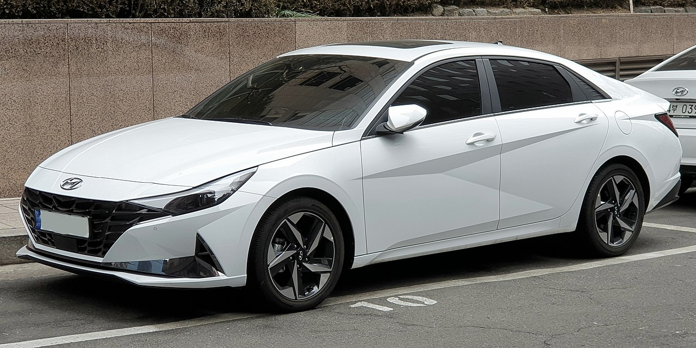
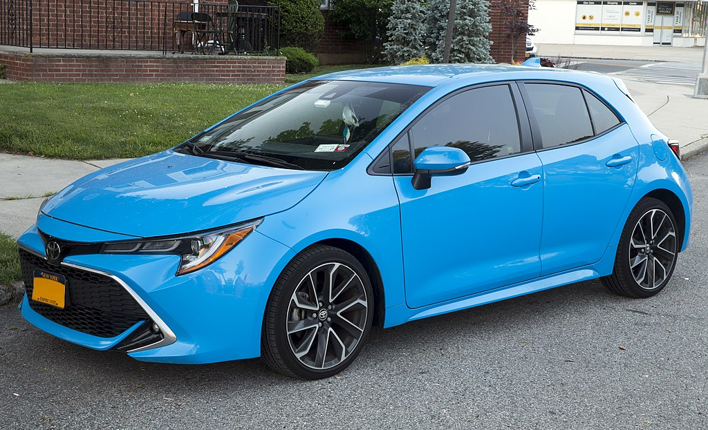

The Hyundai Elantra, also known as the Hyundai Avante (Korean: 현대 아반떼), is a compact car produced by the South Korean manufacturer Hyundai since 1990. The Elantra was initially marketed as the Lantra in Australia and some European markets. In Australia, this was due to the similarly named Mitsubishi Magna Elante model;[1] similarly, in other markets, the name Avante is not used due to its similarity with Audi's "Avant" designation, which is used for their line-up of station wagons.[2] The name was standardized as "Elantra" worldwide in 2001 (except in South Korea and Singapore).[3]First generation (J1; 1990)

A car, or an automobile, is a motor vehicle with wheels. Most definitions of cars state that they run primarily on roads, seat one to eight people, have four wheels, and mainly transport people, not cargo.[1][2] French inventor Nicolas-Joseph Cugnot built the first steam-powered road vehicle in 1769, while French-born Swiss inventor François Isaac de Rivaz designed and constructed the first internal combustion-powered automobile in 1808.

car, or an automobile, is a motor vehicle with wheels. Most definitions of cars state that they run primarily on roads, seat one to eight people, have four wheels, and mainly transport people, not cargo.[1][2] French inventor Nicolas-Joseph Cugnot built the first steam-powered road vehicle in 1769, while French-born Swiss inventor François Isaac de Rivaz designed and constructed the first internal combustion-powered automobile in 1808.
The Toyota Corolla (Japanese: トヨタ・カローラ, Hepburn: Toyota Karōra) is a series of compact cars (formerly subcompact) manufactured and marketed globally by the Japanese automaker Toyota Motor Corporation. Introduced in 1966, the Corolla was the best-selling car worldwide by 1974 and has been one of the best-selling cars in the world since then. In 1997, the Corolla became the best-selling nameplate in the world, surpassing the Volkswagen Beetle.[1] Toyota reached the milestone of 50 million Corollas sold over twelve generations in 2021.[2]
The Toyota Corolla (Japanese: トヨタ・カローラ, Hepburn: Toyota Karōra) is a series of compact cars (formerly subcompact) manufactured and marketed globally by the Japanese automaker Toyota Motor Corporation. Introduced in 1966, the Corolla was the best-selling car worldwide by 1974 and has been one of the best-selling cars in the world since then. In 1997, the Corolla became the best-selling nameplate in the world, surpassing the Volkswagen Beetle.[1] Toyota reached the milestone of 50 million Corollas sold over twelve generations in 2021.[2]
The Toyota Corolla (Japanese: トヨタ・カローラ, Hepburn: Toyota Karōra) is a series of compact cars (formerly subcompact) manufactured and marketed globally by the Japanese automaker Toyota Motor Corporation. Introduced in 1966, the Corolla was the best-selling car worldwide by 1974 and has been one of the best-selling cars in the world since then. In 1997, the Corolla became the best-selling nameplate in the world, surpassing the Volkswagen Beetle.[1] Toyota reached the milestone of 50 million Corollas sold over twelve generations in 2021.[2]